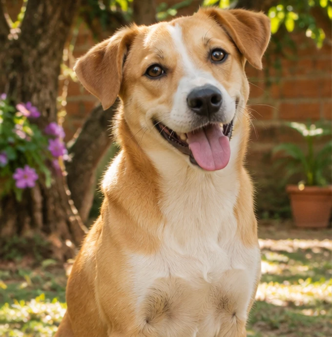
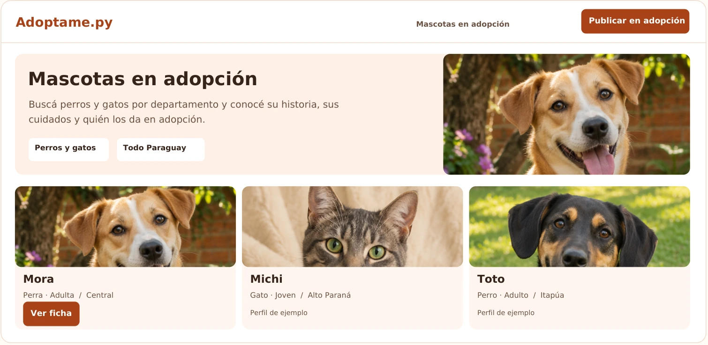
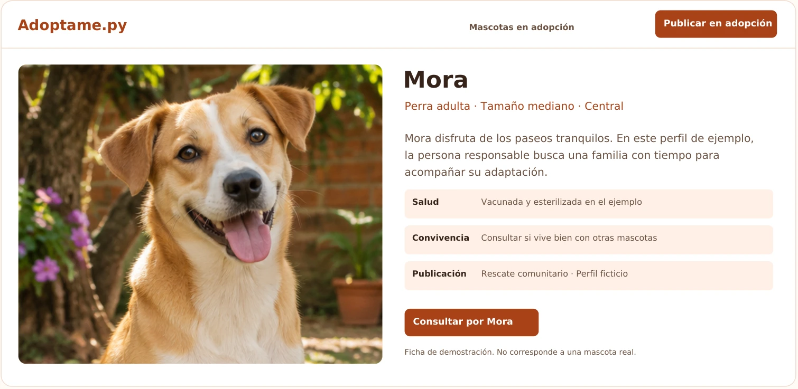
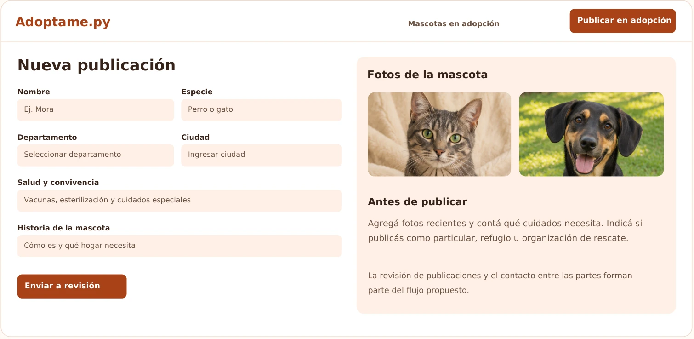
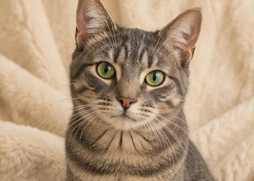
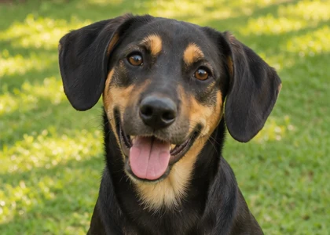

Impacto social · En desarrollo
Adoptame.py
Estoy desarrollando una web para que particulares, refugios y rescatistas de Paraguay puedan compartir mascotas en adopción. El catálogo se organiza por departamento. Las fichas reúnen los cuidados de cada animal y el proyecto contempla aportes para alimento, atención veterinaria y rescate.







Adoptame.py · Versión demo
Animales en adopción por zona
3 perfiles ficticios en la demo
Mora
Perra adulta · Central

Michi
Gato joven · Alto Paraná

Toto
Perro adulto · Itapúa
Apoyo a animales en situación de calle
Elegí a quién apoyar
La propuesta contempla donaciones directas al destinatario elegido. Todas las opciones de esta vista son demostrativas.